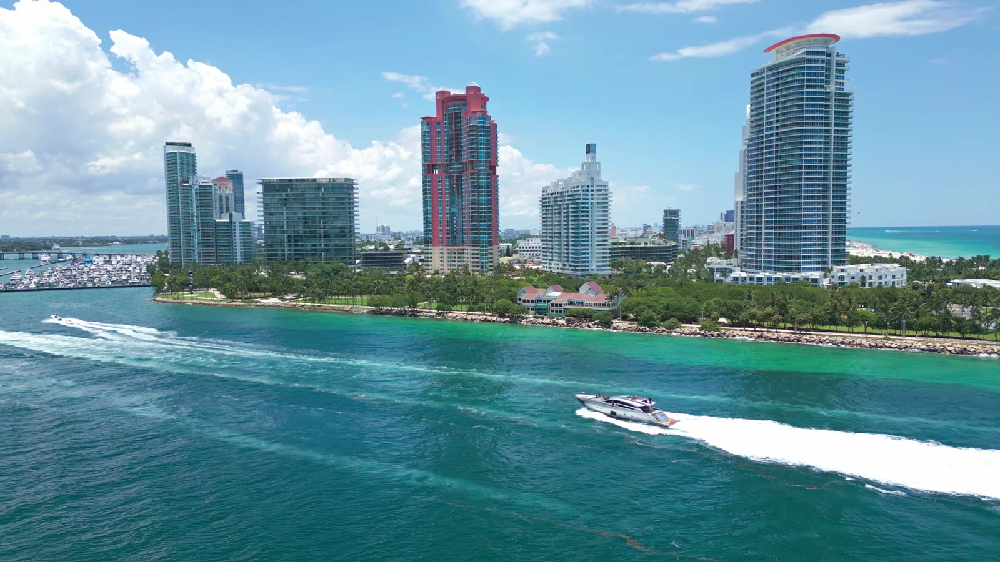
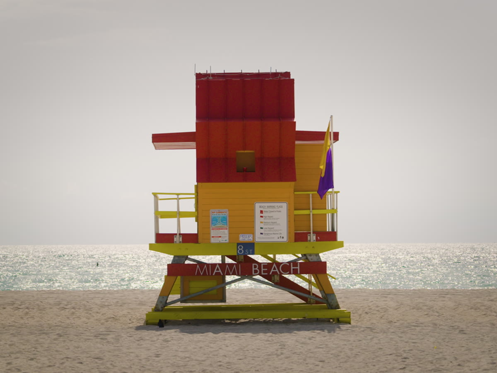

Latest from David

Explore street work, improvements and projects near you.
Loading city projects…
Loading the project map…
Open the project directoryCity Public Works map features. Locations are approximate. Data & sources

Latest from David